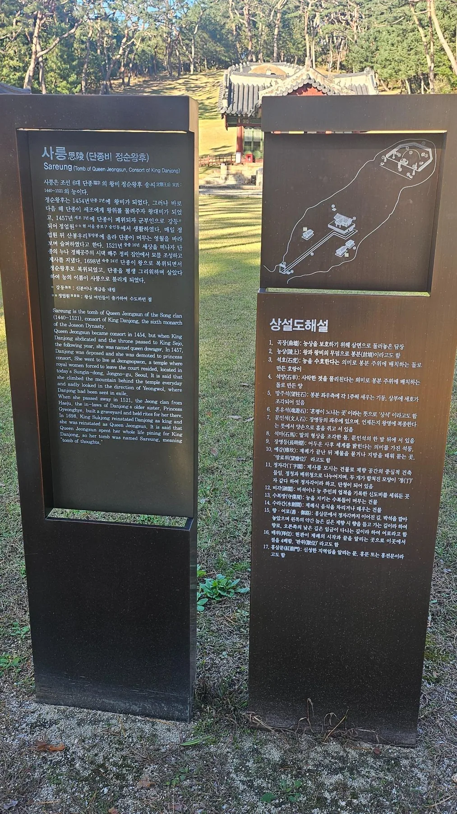
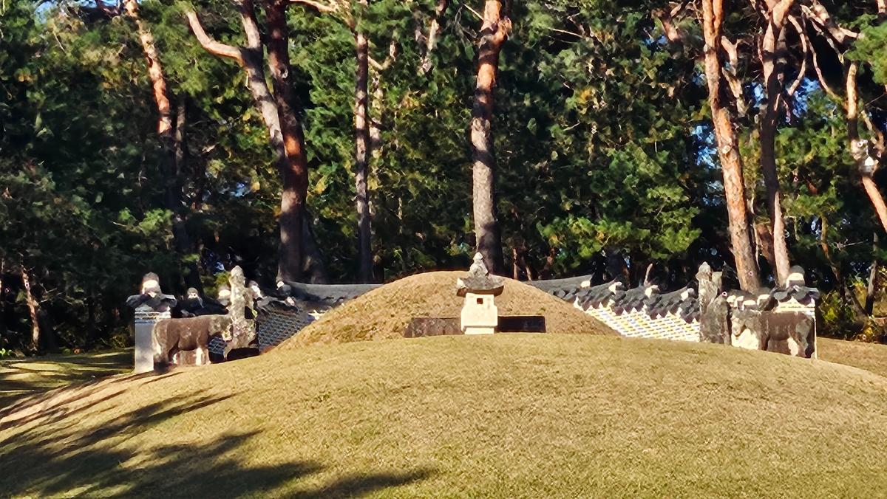
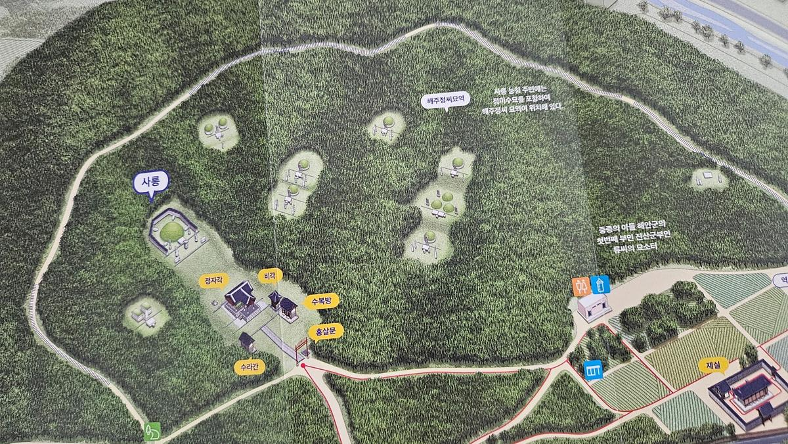
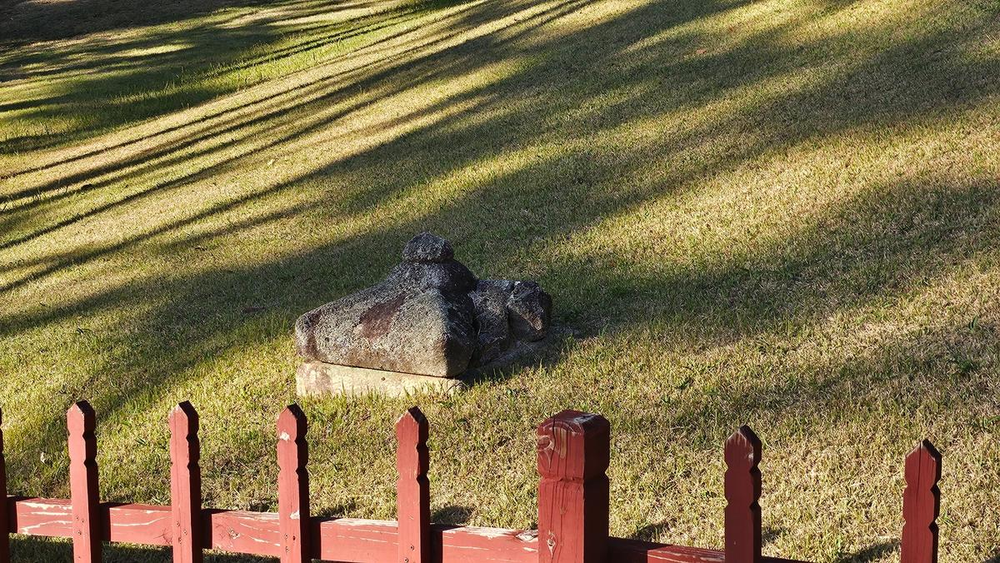
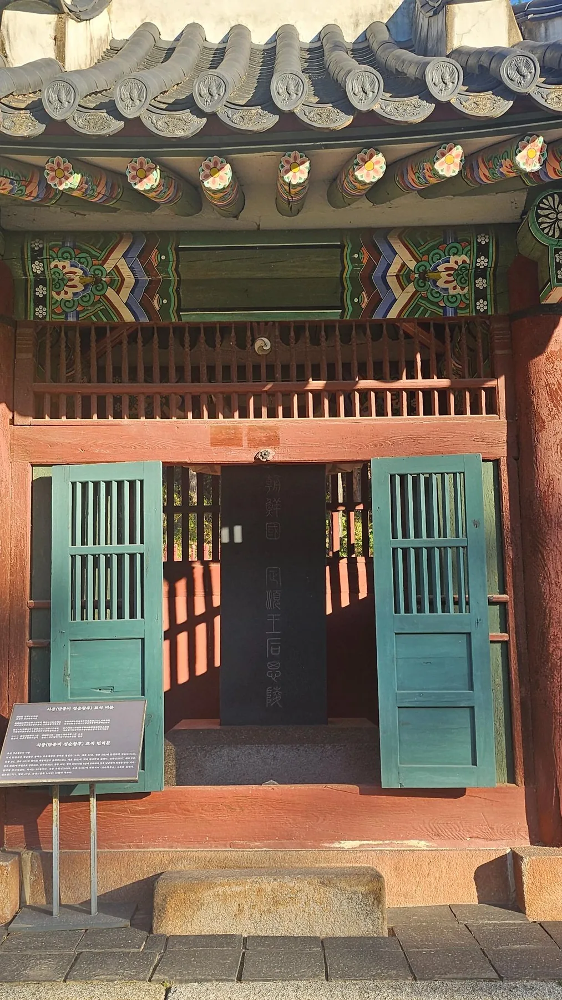

이번에는 그 기다림이 끝난 곳, 남양주 사릉을 찾았다.
왕릉인데, 왕릉 같지 않았다
홍살문 앞에 서자 정자각과 그 뒤 능침이 한 시야에 들어왔다. 여러 왕릉에서 익숙했던 긴 진입 공간이나 압도적인 규모보다 작은 공간 안에 왕릉의 요소들이 오밀조밀 모여 있다는 느낌이 먼저 들었다.
사릉은 정순왕후 한 사람의 단릉이다. 그러나 정순왕후가 1521년 세상을 떠났을 때 이곳은 왕릉이 아니었다. 훗날 단종과 정순왕후의 지위가 회복되면서 기존 묘가 왕릉의 격식을 갖추게 되었다.
한 왕비를 위해 처음부터 만든 왕릉이라기보다,
한 여인의 무덤이 훗날 왕릉이 된 곳.

다른 왕릉의 축소판 같은 능침
능침을 바라보면 그 인상은 더 분명해진다. 봉분과 석물, 소나무 숲이 가까운 거리 안에 들어온다. 화려함이나 위압감보다 작고 단정한 구성이 먼저 눈에 들어왔다.
이 소박함을 정순왕후의 성품이나 삶을 의도적으로 표현한 결과라고 단정할 수는 없다. 그러나 현장에서 바라보니 궁궐보다 궁 밖에서 훨씬 오래 살아야 했던 그녀의 생애와 묘하게 겹쳐 보였다.
그러나 그렇게 살아온 사람의 무덤처럼 보였다.

사릉이 이곳에 있는 이유 — 경혜공주와 해주 정씨
사릉에서 가장 뜻밖이었던 것은 현장 조감도였다. 왕릉 하나만 표시되어 있을 것이라 생각했는데, 능역의 숲 사이로 여러 묘역이 함께 남아 있었다. 이 무덤들은 우연히 왕릉 안에 들어온 것이 아니다. 오히려 순서는 반대였다. 정순왕후의 무덤이 먼저 해주 정씨 선산에 들어왔고, 177년 뒤 그 무덤이 왕릉이 되었다.
그 연결의 한가운데에 단종의 누이 경혜공주와 그의 아들 정미수가 있다. 경혜공주는 문종의 딸이자 단종의 친누이였고, 해주 정씨 정종과 혼인했다. 단종 복위 사건 뒤 정종은 유배되었고 1461년 세조 때 모반 혐의로 처형되었다. 그러나 세조는 정종의 가족에게 연좌시키지 말도록 하고 경혜공주와 정미수를 서울로 불러들였다. 이후 공주에게 집과 토지·노비를 내렸고, 정미수 역시 보호받았다.
이 보호는 세조 한 대에서 끝나지 않았다. 세조가 죽은 뒤에도 정미수를 죄인의 자손으로 처벌하거나 관직 진출을 막아야 한다는 주장이 있었지만, 왕실은 세조의 유교(遺敎)를 근거로 그를 보호했다. 예종은 경혜공주의 재산을 돌려주고 정미수를 종친의 예에 따라 서용하도록 했다. 결국 문종의 외손이자 단종의 조카인 정미수의 계통은 살아남았다.
단종의 왕위는 사라졌지만,
그의 누이와 조카까지 모두 사라진 것은 아니었다.
그리고 세월이 흘러 혈육이 없던 정순왕후는 정미수를 시양자(侍養子)로 삼아 자신의 사후를 의탁했다. 1521년 정순왕후가 세상을 떠나자 그녀가 묻힌 곳이 바로 정미수 집안의 해주 정씨 선산이었다. 따라서 사릉 주변에 해주 정씨의 묘가 남아 있는 것은 왕릉 조성 과정의 우연한 흔적이 아니라, 경혜공주에서 정미수로, 다시 정순왕후로 이어진 관계의 흔적이라고 보는 편이 정확하다.
경혜공주가 아들 정미수를 세조에게 직접 부탁했다거나, 정희왕후가 정미수를 몰래 궁중에서 길렀다는 이야기는 해주 정씨 족보 등에 전하는 후대의 이야기다. 반면 정종 처형 뒤 세조가 경혜공주와 정미수를 연좌시키지 않고 보호했고, 그 조치가 예종·성종 대에도 이어졌다는 사실은 실록 기록으로 확인된다. 이 글에서는 후자의 확인 가능한 사실을 중심으로 서술한다.
여기에서 한 가지 역설이 생긴다. 세조는 단종에게서 왕위를 빼앗고 그의 복위를 꾀한 사람들을 제거했지만, 한편으로는 경혜공주와 정미수의 삶까지 끊어 버리지는 않았다. 그 선택이 훗날 정순왕후의 묘가 이곳에 자리할 수 있었던 직접적인 의도였다고 말할 수는 없다. 다만 살아남은 정미수와 해주 정씨 가문이 정순왕후의 마지막을 받아들였고, 그 결과 오늘의 사릉이 이곳에 남게 된 역사적 연결은 분명하다.
사릉은 왕릉이 되기 전에,
먼저 한 집안이 지켜 준 무덤이었다.
1698년 숙종이 단종과 정순왕후를 복위시키면서 이 무덤은 사릉이 되었다. 원칙대로라면 왕릉 안의 사가 묘는 옮겨야 했지만, 숙종은 해주 정씨가 보여 온 의리를 고려해 기존 묘들을 그대로 두도록 했다. 그래서 지금도 사릉의 숲에는 왕비의 능과 그 왕비를 받아들였던 집안의 무덤이 함께 남아 있다.

처음 눈에 들어온 예감의 덮개
정자각 주변을 살피다 작은 석조 시설에서 발걸음이 멈췄다. 예감(瘞坎)이다. 제향 뒤 축문 등을 처리하는 의례와 관계된 시설인데, 이번에는 덮개가 놓인 모습이 유난히 선명하게 눈에 들어왔다.
사릉에만 이런 덮개가 있다는 뜻은 아니다. 여러 왕릉을 다녔지만 내가 예감의 덮개 자체를 의식하며 바라본 것은 이번이 처음이었다. 거대한 봉분보다 이런 작은 시설 하나가 오히려 왕릉이 오랫동안 제향이 반복된 의례 공간이었다는 사실을 실감하게 했다.

왕비였던 시간보다 왕비가 아니었던 시간
정순왕후는 1454년 단종의 왕비가 되었다. 이듬해 단종이 세조에게 왕위를 넘겼고, 1457년 단종이 노산군으로 강등되면서 그녀 역시 왕비의 자리에서 내려왔다.
그러나 정순왕후의 삶은 거기서 끝나지 않았다. 그녀는 1521년까지 살았다. 단종과 함께 왕과 왕비로 지낸 시간은 불과 몇 년이었지만, 남편 없이 궁 밖에서 살아야 했던 시간은 60년이 넘었다.
혼자 남아 살아야 했던 세월은 너무 길었다.
어쩌면 오래 살았기 때문에 기다림도 길어졌고, 기다림이 길었기 때문에 그녀의 삶은 후대에 더욱 강한 ‘수절과 그리움’의 상징이 되었는지도 모른다. 동망봉에서 평생 남편을 바라보았다는 전승 역시 실제 하루하루의 기록이라기보다 후대가 정순왕후를 어떻게 기억했는지를 보여 주는 이야기로 읽는 편이 자연스럽다.

한 여인에서 ‘수절왕비’의 상징으로
사릉을 나오며 한 가지 생각이 계속 남았다. 우리는 정순왕후의 긴 생애 가운데 단종과 함께했던 짧은 몇 년을 중심으로 그녀를 기억한다.
그녀가 단종보다 몇 해 뒤 세상을 떠났다면 지금과 같은 서사가 만들어졌을까. 60년이 넘는 생존의 시간이 있었기에 ‘기다림’도 길어졌고, 조선 사회가 중시한 수절과 절개의 가치가 그녀의 삶 위에 더 강하게 겹쳐졌을 것이다.
한 사람의 실제 삶보다
후대가 기억하고 싶었던 삶이 더 길게 남기도 한다.
이것은 정순왕후의 마음을 의심하려는 이야기가 아니다. 사릉에서 보게 되는 것은 한 개인의 삶과, 그 삶을 유교적 가치 속에서 기억해 온 후대의 시간이 겹쳐진 모습이다.
177년 뒤, 무덤이 왕릉이 되다
1521년 정순왕후가 이곳에 묻혔을 때는 왕릉이 아니었다. 1698년 숙종 때 단종이 복위되면서 정순왕후도 다시 왕후가 되었고, 그녀의 묘도 사릉이라는 왕릉의 지위를 갖게 되었다. 죽은 뒤 177년이 지나서였다.
177년 전에 죽은 아내도 다시 왕비가 되었다.
그러나 두 사람은 죽어서도 함께 묻히지 못했다. 단종은 영월 장릉에, 정순왕후는 남양주 사릉에 남았다.
사릉의 연결을 확인한 기록
- 『세조실록』 세조 7년(1461) 10월 기록 등 — 정종 처형 뒤 경혜공주와 정미수에 대한 연좌를 막고 서울로 불러들인 사실.
- 『예종실록』 예종 1년(1469) 기록 — 경혜공주의 재산 반환과 정미수의 서용 등 세조 사후에도 이어진 보호.
- 한국학중앙연구원 「경혜공주」·「현덕왕후」 항목 — 관련 실록 기록과 후대 족보 전승을 구분해 정리.
- 유지은, 「조선후기 양주 해주정씨 종가 고문서에 나타난 사릉 및 선영 수호 양상」, 『고문서연구』 67, 2025 — 정순왕후가 정미수를 시양자로 삼아 해주 정씨가에 사후를 의탁했고, 그 묘가 훗날 사릉으로 추봉된 과정.
한 사람은 한양에서 영월을 바라보았다고 전한다.
이제 영월에서 한양을 바라보았던 사람을 만나러 간다.
경복궁에서 적통을, 사육신묘에서 충을, 사릉에서 열을 보았다. 이제 영월에서는 이 모든 가치의 한가운데 놓였던 인간 이홍위를 만나게 된다.
- 경복궁 — 왕좌는 있었지만
- 사정전·경회루 — 왕의 이름과 권력
- 사육신묘 — 목숨을 건 충
- 정업원터·동망봉 — 혼자 남은 왕비
- 사릉 — 왕비였던 시간보다 왕비가 아니었던 시간
- 청령포·관풍헌 — 인간 이홍위
- 장릉 — 다시 단종이 되기까지
- 종묘 — 241년 뒤 돌아온 왕